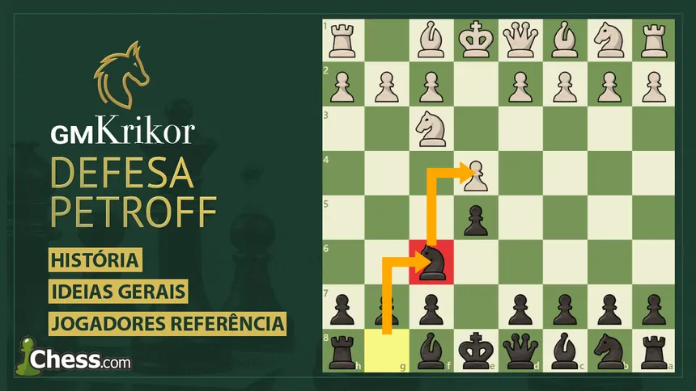

A Defesa Russa, também conhecida como Defesa Petroff, é uma abertura tradicional do xadrez que começa com os movimentos 1. e4 e5 2. Cf3 Cf6. As pretas respondem ao ataque do cavalo branco colocando seu próprio cavalo em f6 e pressionando o peão de e4. A principal ideia da Defesa Russa é combater o centro de forma direta e buscar uma posição equilibrada. Diferentemente de algumas defesas mais agressivas, ela costuma levar a posições sólidas e estratégicas, nas quais os jogadores precisam desenvolver suas peças e escolher cuidadosamente o momento de realizar trocas. A Defesa Russa possui diversas variantes e é bastante conhecida no xadrez competitivo. Por sua estrutura sólida e pela possibilidade de neutralizar rapidamente algumas ideias das brancas, ela é utilizada por jogadores de diferentes níveis, incluindo grandes mestres.